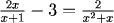
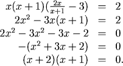
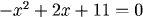
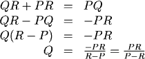
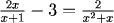
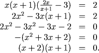
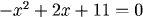
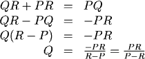

Solving Fractional and Radical Equations
Solving Fractional Equations
If an equation involves fractions, we can eliminate them by multiplying both sides by the least common denominator and then solving as before. However, we must be careful to check for extraneous solutions which multiplying by the common denominator may have introduced.
Examples





1. Solve for \(x\)

To see what the common denominator is, notice that the denominator on the right hand side can be factored as \(x(x+1)\).
Thus the least common denominator is \(x(x+1)\), and our first step is to multiply both sides by this term

Thus, by solving by factoring \(x=-2\) or \(x=-1\). However, the original equation isn't defined if \(x=-1\), so this is an extraneous solution.
The only solution is \(x=-2\).

2. Solve for \(Q\)
The least common denominator is \(PQR\), so multiplying by this,

Notice how we used our techniques for solving linear equations to group all terms containing \(Q\) and then solve.
We also are assuming that \(P\) and \(R\) are not equal (so that we aren't dividing by zero).
Solving Radical Equations
We solve radical equations by raising both sides of the equation to the same power. The principle is that
$$a=b \implies a^r = b^r$$
Again, we must be careful to check for extraneous solutions.
Examples
For each, notice how we move the radical term to one side of the equation before raising both sides to the same power.


For each, notice how we move the radical term to one side of the equation before raising both sides to the same power.
1. Solve for \(x\)
Thus \(x=9\) or \(x=1\). However, x=1 doesn't solve the original equation, so the only solution is \(x=9\).
2. Solve for \(x\)
Practice
Question 1:
Question 2:
Question 2:
Return to Main